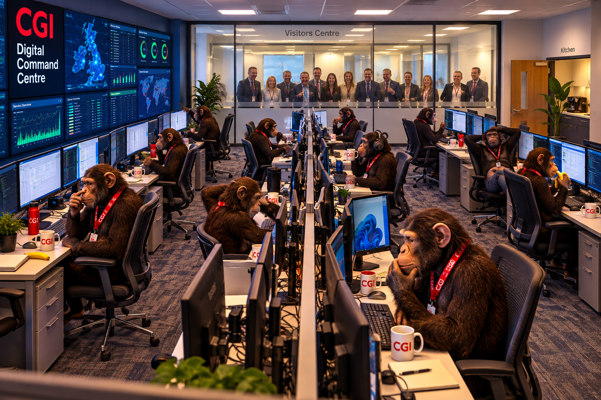

I'd been head-hunted!
After nearly three decades with CBSL, Radius and eventually Practice Net, changing jobs wasn't something I had particularly expected to do.
Then, completely out of the blue, I received an invitation from an old colleague, Dave Colley, to apply for a job at CGI.
I'd been head-hunted!
Well...not quite.
It turned out CGI paid employees a bonus of a couple of hundred pounds for introducing somebody to the company if they were subsequently taken on. Dave wasn't so much recognising my extraordinary talents as trying to earn himself a few quid.
Dave and I went back a long way. He had previously worked at Radius CBSL but, after falling out with the management, left to join IT Professional.
Then Radius bought IT Professional.
So after leaving Radius, Dave somehow found himself working for Radius again.
He didn't stay much longer and eventually moved to CGI, which is how my name ended up being put forward years later.
I went along for a couple of interviews, answered their questions and, somewhat to my surprise, got the job.
This time I was even their first choice.
This isn't how I do IT...
I started at CGI on 2 November 2015, and initially I couldn't believe how differently everything worked.
At Practice Net I'd spent years dealing directly with customers. I had many of their contact details in my mobile phone and knew the people running their businesses personally.
If I needed to reboot a customer's server, I'd usually phone the boss — often the senior partner of the accountancy practice — and say something along the lines of, "I'm about to reboot your server. Can you get everyone to log out? I'll be about twenty minutes. OK?"
"OK."
And that was that.
I'd visited these people repeatedly over many years. I'd sometimes have a drink or a meal with them. Some had become friends rather than simply customers.
CGI was the complete opposite.
We sat in an office remotely accessing customers' servers. I had no direct contact with the customer at all. In many cases I didn't even know the names of the people whose systems I was looking after.
If I needed to reboot a server, I couldn't simply pick up the phone. I'd have to contact the SDM, who would contact the customer, negotiate permission for the reboot and agree a suitable time. Eventually the approval would make its way back to me and I could actually do it.
For somebody accustomed to sorting things out directly with customers, it felt incredibly alien.
Apparently I wasn't the only person who noticed.
One of my new colleagues, Nige, told my new boss, Matt, that he didn't think I'd stick it out. The whole CGI way of working was simply too different from everything I'd been used to.
To be fair to Nige, at first I probably agreed with him.
But I was determined that I wasn't going back to Practice Net, so I stuck with it.
And gradually, what had initially seemed completely alien became just another way of working.
A 50-year-old junior
I joined CGI as a Junior Wintel Analyst.
Junior.
I was 50 years old and had been working in IT for 28 years!
At first the title seemed faintly ridiculous. I'd been installing and maintaining computers and servers since the 1980s and, by the time I left Practice Net, I was specifying complete systems for customers.
But I soon realised that there was another way of looking at it.
I certainly wasn't a junior when it came to IT experience, but I was a junior when it came to working somewhere like CGI.
At Practice Net I'd known the customers personally. I'd installed their equipment, walked around their offices, met their staff and often knew exactly why a particular server existed and what would happen if I switched it off. If something needed doing, I generally just got on and did it.
At CGI I was suddenly one small part of a much larger operation. There were procedures, responsibilities, approvals and other teams involved in things that I'd previously dealt with myself. I might know perfectly well how to reboot a Windows server, but learning when I was allowed to reboot it, who needed to approve it and who needed to know about it was something completely new.
So perhaps Junior wasn't quite as daft as I'd first thought.
Although I still suspect it was also a convenient excuse to pay me less.
After a couple of years I'd reached the top of the junior pay scale and became a Senior Wintel Analyst.
Finally, at somewhere around 52 years old, I'd apparently grown up.
The UK Control Bridge
I worked shifts in what was then called the UK Control Bridge. Our shift pattern consisted of two 12-hour day shifts followed by two 12-hour night shifts and then four days off.
So while most people organised their lives around a seven-day week, mine ran on an eight-day cycle.
It sounds fairly brutal — particularly the two night shifts — but the four days off suited me extremely well. After years of spending three or four nights a week in hotels with CBSL and Radius, suddenly having four consecutive days to myself felt quite luxurious.
There was another advantage too: leaving Practice Net hadn't actually meant leaving Practice Net.
I continued doing work for them on my days off. In the early years after joining CGI I was probably still doing around 50 days a year for Practice Net, so for quite a while I effectively had two jobs.
Over the years that has gradually dwindled away. These days it might only be four or five days a year, but more than a decade after supposedly leaving them, they still haven't quite managed to get rid of me.
Welcome to the Digital Command Centre
The UK Control Bridge didn't keep that name forever. It was eventually rebranded as the Digital Command Centre, and I believe another change may be on the way, turning us into the even grander-sounding AI Digital Command Centre.
It all sounds terribly impressive.
CGI regularly brings existing and potential clients into the Bridgend office for what is known as a Client Experience Day. Part of the experience takes place in a visitor room separated from the Digital Command Centre by a glass wall.
At first the glass is opaque, so the visitors can't see us and we can't see them.
Then, at a suitably dramatic point during the presentation, the glass suddenly turns clear, revealing the Digital Command Centre in all its glory: rows of analysts sitting at multi-screen workstations, apparently keeping the world's IT systems running.

At least that's the idea.
In reality, the timing of the big reveal invariably seems to coincide with somebody picking their nose, scratching their backside or doing something else rather less impressive than the name Digital Command Centre might suggest.
I sometimes wonder whether anybody has considered adding that to the Client Experience Day risk assessment.